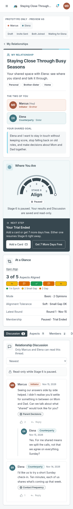
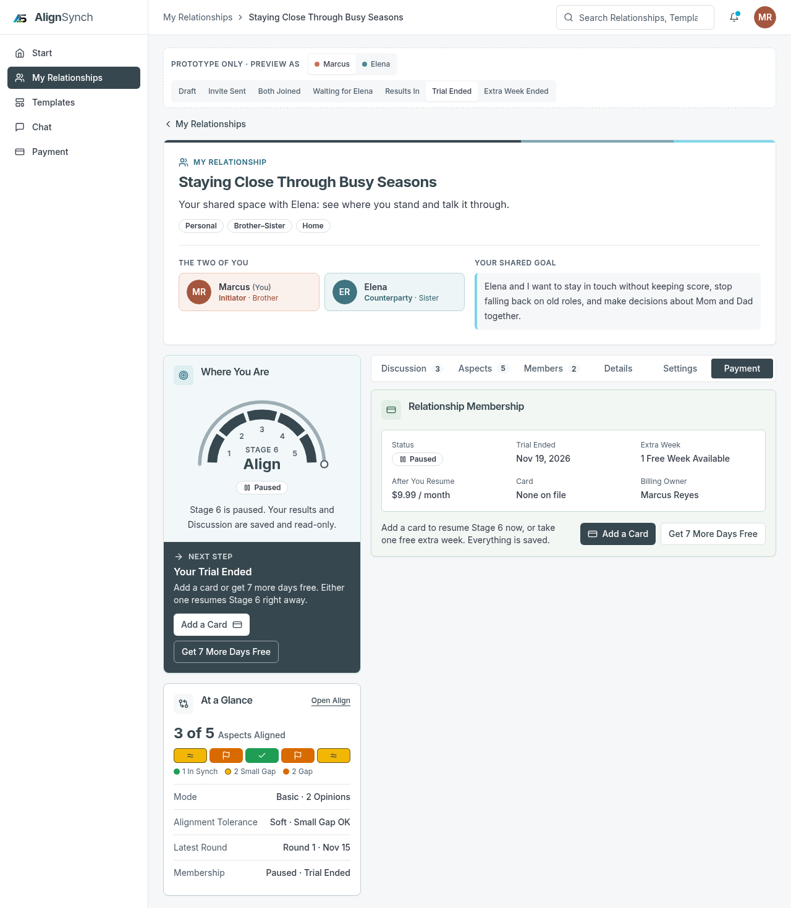
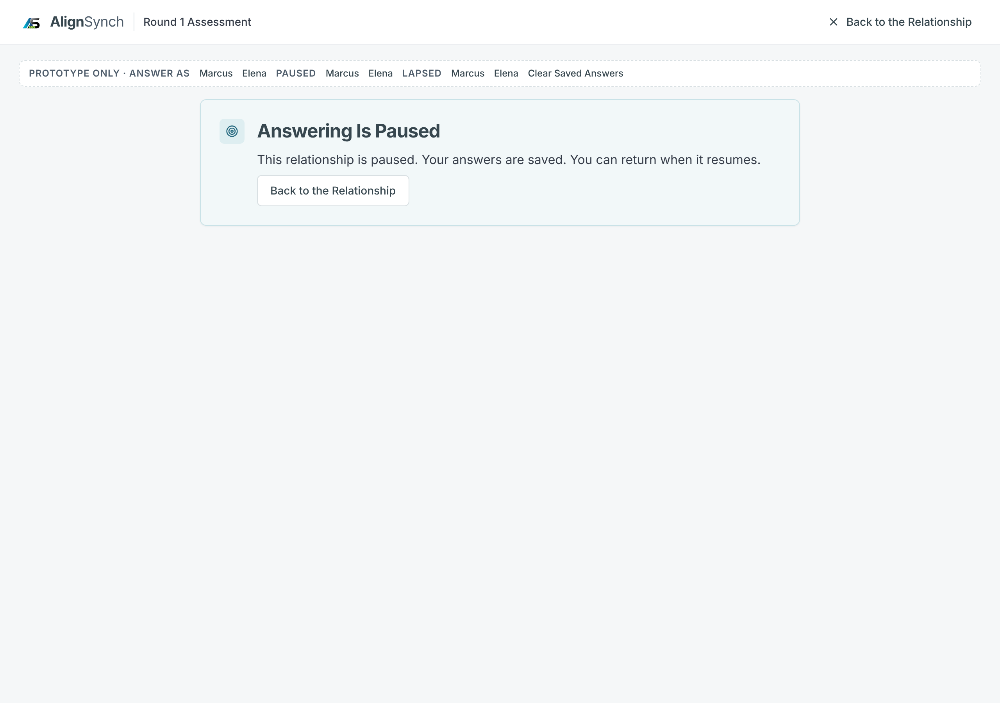
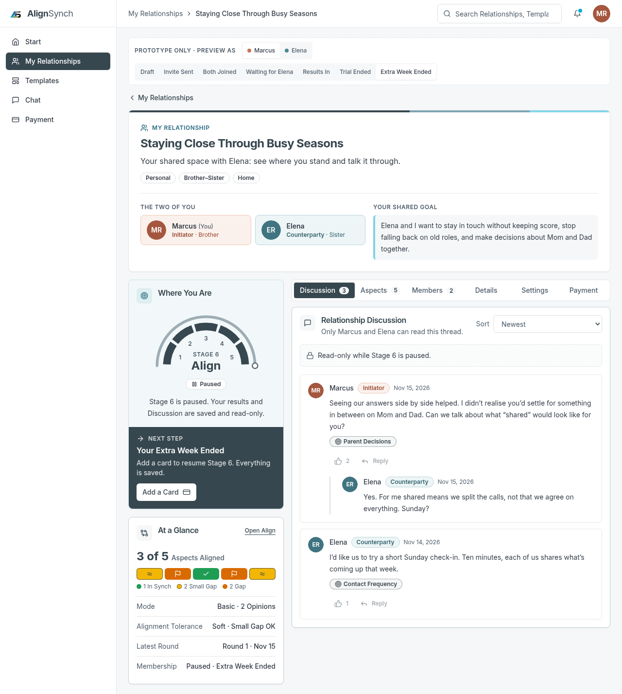
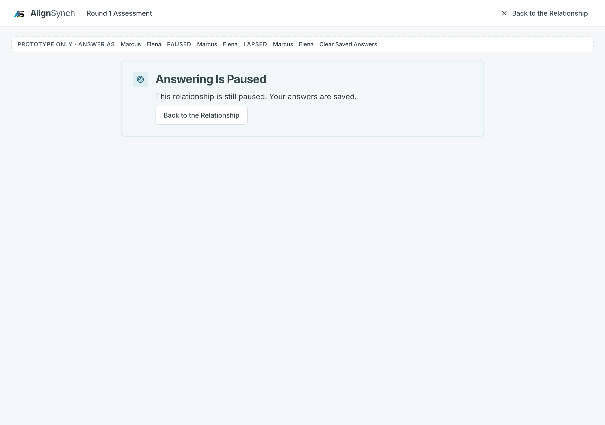
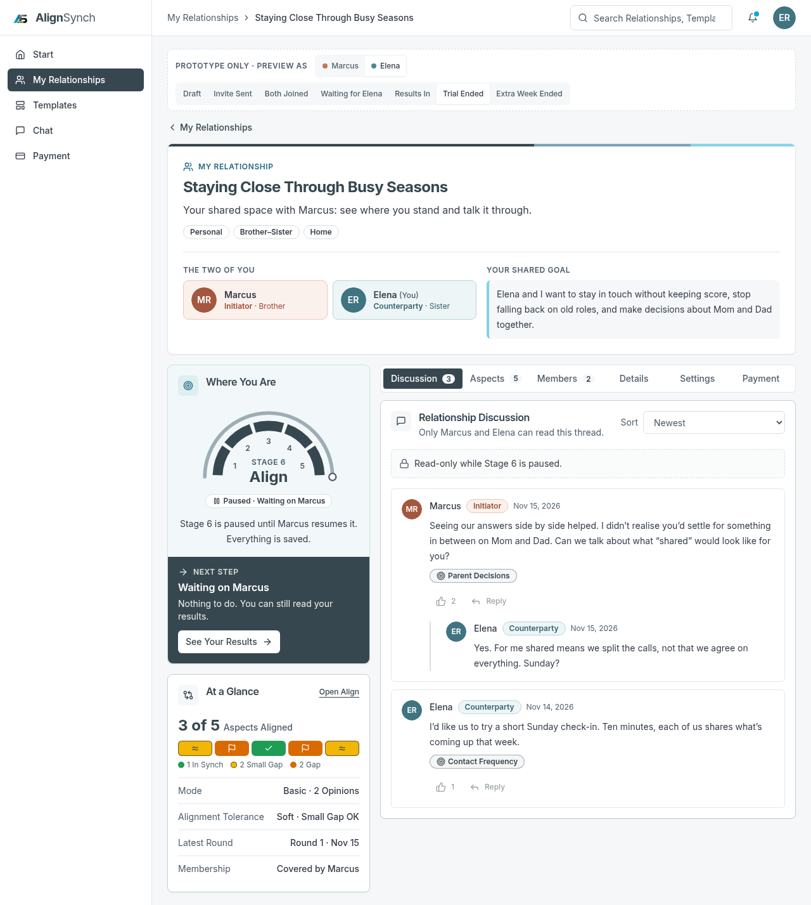
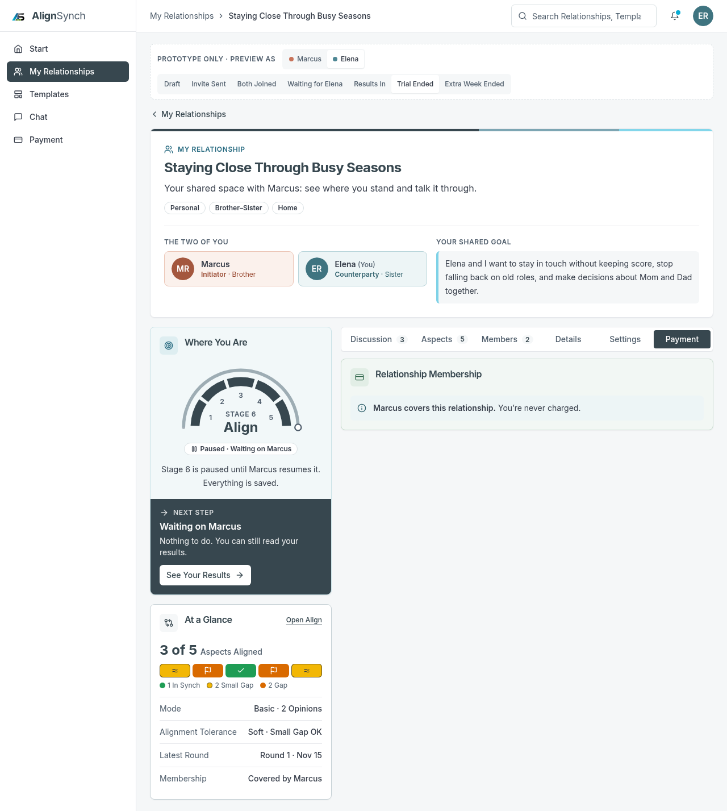
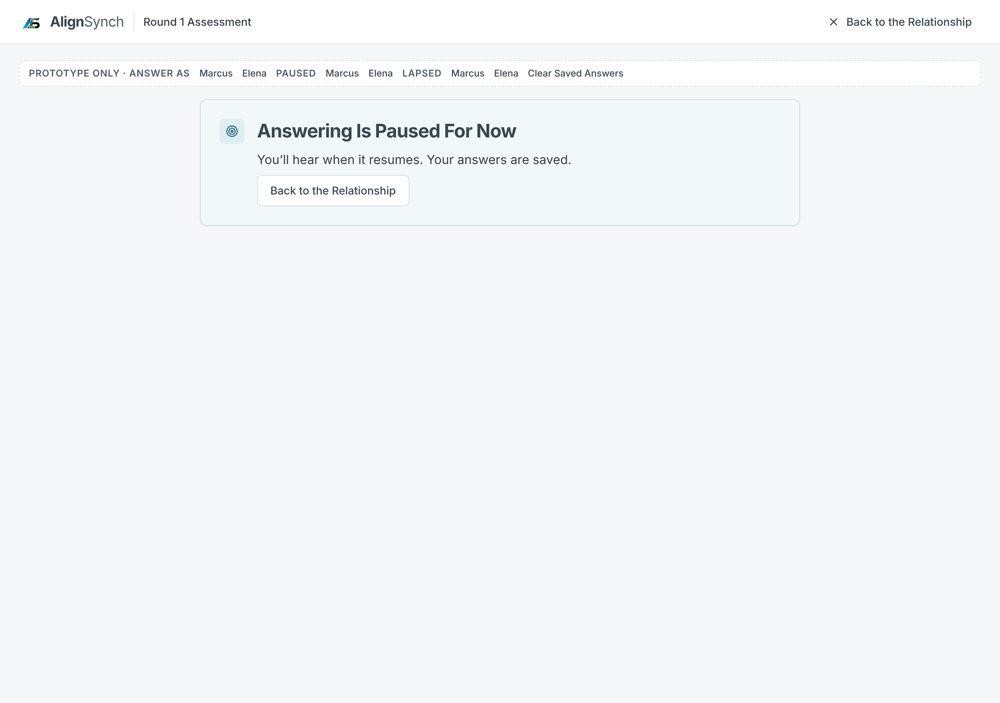

When a Relationship Pauses
When your 7 free days end without a card, Stage 6 pauses. Nothing is lost, and you can resume it right away.
Your 7 free days start when the other person accepts your invite. If they end before you add a card, AlignSynch pauses Stage 6. It doesn’t close it. Your answers, your results and your discussion are all kept. You can still read everything, and one step brings it back: add a card, or take one Extra Week free.
The other person isn’t asked to do anything. They see that the relationship is paused and waiting on you. They never see a price, a trial or a card.
At a Glance
| You (Initiator) | The other person (Counterparty) | |
|---|---|---|
| When it happens | Your 7 days end with no card on file | Same moment |
| What they see | ⏸ Paused · “Your Trial Ended” | ⏸ Paused · Waiting on Marcus |
| What still works | Reading results, Discussion and Aspects; answering when the form is still usable | Reading results, Discussion and Aspects; answering when the form is still usable |
| What’s on hold | Discussion is read-only; changing Aspects | Discussion is read-only; changing Aspects |
| How it resumes | Add a Card or Get 7 More Days Free (once) | When you resume it. Nothing to do |
| What’s lost | Nothing | Nothing |
How It Works
1. Your trial ends, and Stage 6 pauses
On the relationship page, the stage gauge stays on Stage 6 · Align with a Paused chip in grey, with a pause icon. The line under the gauge reads Stage 6 is paused. Your results and Discussion are saved and read-only. The Next Step card reads Your Trial Ended and gives you two choices. Either one resumes Stage 6 right away.

Marcus (Initiator) · Trial Ended · desktop
On a phone, the same card sits right under the stage gauge:

Marcus (Initiator) · Trial Ended · mobile
2. Check what’s on file in Payment
The Payment tab spells out the pause: Status Paused, the date the trial ended, the one Extra Week still available, the price after you resume, and who pays (you).

Marcus (Initiator) · Trial Ended · Payment tab
3. If you open the assessment while paused
When the form is still usable, you can keep answering. The screen is headed Paused, with the line You can keep answering. A note tells you how to resume: Add a Card or Get 7 More Days Free to resume. The status uses a pause icon in grey, never red, and Back to the Relationship is always there.

Marcus (Initiator) · Paused, form still usable
Shot predates the settled copy above
4. Resume it
- Add a Card: Stage 6 resumes now, and the membership continues at your plan’s price.
- Get 7 More Days Free: Stage 6 resumes now for one Extra Week. You get this once per relationship.
5. If your Extra Week ends too
When the Extra Week is used up and there’s still no card, Stage 6 pauses again. This time the Next Step card reads Your Extra Week Ended and offers Add a Card only. Everything is still saved. The line under the gauge stays Stage 6 is paused. Your results and Discussion are saved and read-only.

Marcus (Initiator) · Extra Week Ended
If the form is still usable, the answer screen stays Paused with You can keep answering.

Marcus (Initiator) · Paused, after the Extra Week
Shot predates the settled copy above
What the Other Person Sees
Elena sees the same pause, without any billing. Her badge reads Paused · Waiting on Marcus. The line under the gauge is Stage 6 is paused until Marcus resumes it. Everything is saved. Her Next Step reads Waiting on Marcus · Nothing to do. You can still read your results. Her Payment tab only says Marcus covers this relationship. You’re never charged.

Elena (Counterparty) · Paused · Waiting on Marcus

Elena (Counterparty) · Payment tab while paused
If she opens the assessment and the form is still usable, she sees Paused · Waiting on Marcus with You can keep answering. She never sees a price, a trial or a card. She sees the same after your Extra Week ends too. Her view doesn’t change between the two pauses.

Elena (Counterparty) · Paused · Waiting on Marcus, form still usable
Shot predates the settled copy above
The Counterparty Guide has its own version of this page, written for Elena, with no plan or payment words at all.
Good to Know
- A pause is not a close. Leaving a relationship closes it. A pause only puts Stage 6 on hold.
- Drafts and pending invites use no trial days. The clock starts when the other person accepts.
- One Extra Week per relationship. After that, a card is the only way to resume.
- Nothing is deleted. Results, answers and Discussion stay readable to both of you the whole time.
For the Build Team
Acceptance
- [ ] Trial end without a card sets Stage 6 to Paused for both seats. It is never Closed.
- [ ] Initiator Next Step: Your Trial Ended with Add a Card and Get 7 More Days Free. After the Extra Week is used: Your Extra Week Ended with Add a Card only.
- [ ] Initiator pause line: Stage 6 is paused. Your results and Discussion are saved and read-only. Never “Align is paused”.
- [ ] Counterparty pause line: Stage 6 is paused until Marcus resumes it. Everything is saved.
- [ ] Counterparty badge: Paused · Waiting on Marcus.
- [ ] Counterparty Next Step: Waiting on Marcus with See Your Results. There is no price, trial, card or Extra Week anywhere on the Counterparty seat, including the Payment tab and the answer screen.
- [ ] Discussion shows “Read-only while Stage 6 is paused.” Reply and Aspect controls are disabled, and reading stays enabled.
- [ ] Answer screen when the form is still usable: Initiator Paused with You can keep answering. and Add a Card or Get 7 More Days Free to resume. Counterparty Paused · Waiting on {name} with You can keep answering. Both have Back to the Relationship.
- [ ] The status chip is icon plus word (⏸ Paused). Paused uses grey and a pause icon. No red anywhere.
- [ ] The Counterparty pause email uses the seat-split template from #1168 (see Reference › Emails).
Locked rules: trial starts when the Counterparty accepts (§45) · trial end pauses Stage 6, with one free Extra Week · the Counterparty never sees price, trial or card · status is icon plus word · Paused uses grey and a pause icon · no red · say “Stage 6” and “Extra Week”, never “Align is paused” or “extension”.
Builds: merged on main 19 Nov (parity check, read-only). The copy deltas below are still open on main @ 601ce26.
- Answer screen paused states: issue #1223 · PR #1235 (merged)
- Relationship Detail pause reason: issue #1224 · PR #1236 (merged)
| Citation | Evidence | What it means |
|---|---|---|
lib/relationship/membership.ts:459 |
“return ${initiatorLapseClause(membership.reason)}, so Align is paused.;” |
The Initiator’s lapse line still says “Align is paused” and names both the trial and the extension. |
data/pages/dashboard-relationship-detail.ts:240 |
“Stage 6 is paused. Your results and Discussion are saved and read-only.” | The settled Initiator line exists in the detail copy. |
data/pages/assessment-answer.ts:230 |
“heading: "Answering Is Paused",” | The answer pane still uses the older heading. |
data/pages/assessment-answer.ts:46 |
”{ id: "back", label: "Back to the relationship" },” | Spec: Back to the Relationship. |
References
| Shot | Source | Original |
|---|---|---|
| trial-ended-initiator-desktop | Bundle 03 | spec-design-v2-bundles/03-spec-design-page-relationship-detail-v2/reference/rd-trial-ended-initiator-1280.png |
| trial-ended-initiator-mobile | Bundle 03 | …/03-…/reference/rd-trial-ended-initiator-390.png |
| trial-ended-initiator-payment-desktop | Bundle 03 | …/03-…/reference/rd-trial-ended-initiator-payment-1280.png |
| extra-week-ended-initiator-desktop | Bundle 03 | …/03-…/reference/rd-trial-ended-extended-initiator-1280.png |
| trial-ended-counterparty-desktop | Bundle 03 | …/03-…/reference/rd-trial-ended-counterparty-1280.png |
| trial-ended-counterparty-payment-desktop | Bundle 03 | …/03-…/reference/rd-trial-ended-counterparty-payment-1280.png |
| answering-paused-initiator-desktop | Prototype (18 Nov) | box /workspace/alignsynch/out/new-surfaces-shots/assessment-paused-marcus-1280.png · assessment.html?state=paused |
| answering-lapsed-initiator-desktop | Prototype (18 Nov) | box …/assessment-lapsed-marcus-1280.png · assessment.html?state=lapsed |
| answering-paused-counterparty-desktop | Prototype (18 Nov) | box …/assessment-paused-elena-1280.png · assessment.html?state=paused&role=counterparty |
Bundle shots are the approved pass 10 renders from 16 Nov. They already show the settled Relationship Detail copy (Initiator and Counterparty pause lines, Paused · Waiting on Marcus, Stage 6 and Extra Week, grey pause chip). The three answer-screen shots exist only in the prototype, and they predate the settled copy (they still show “Answering Is Paused” / “Answering Is Paused For Now” and a target icon). Recapture them once the answer-pane copy follow-up to PR #1235 lands. No QA capture of the built app exists for any of these states.